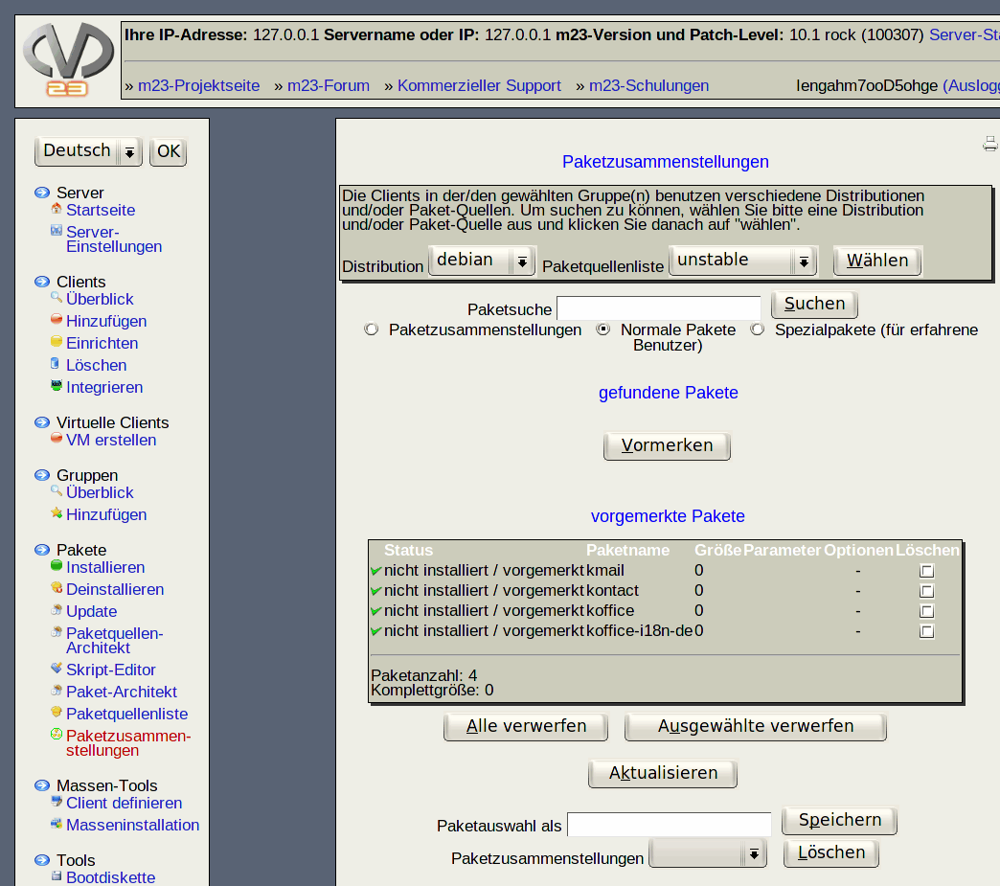

In diesem Dialog können Sie vorhandene Paketzusammenstellungen bearbeiten, löschen oder neue erstellensowie die ausgewählten Pakete in eine Datei exportieren und aus einer Datei Pakete in die Liste der vorgemerkten Pakete importieren.

Unterabschnitte
root
2013-08-18